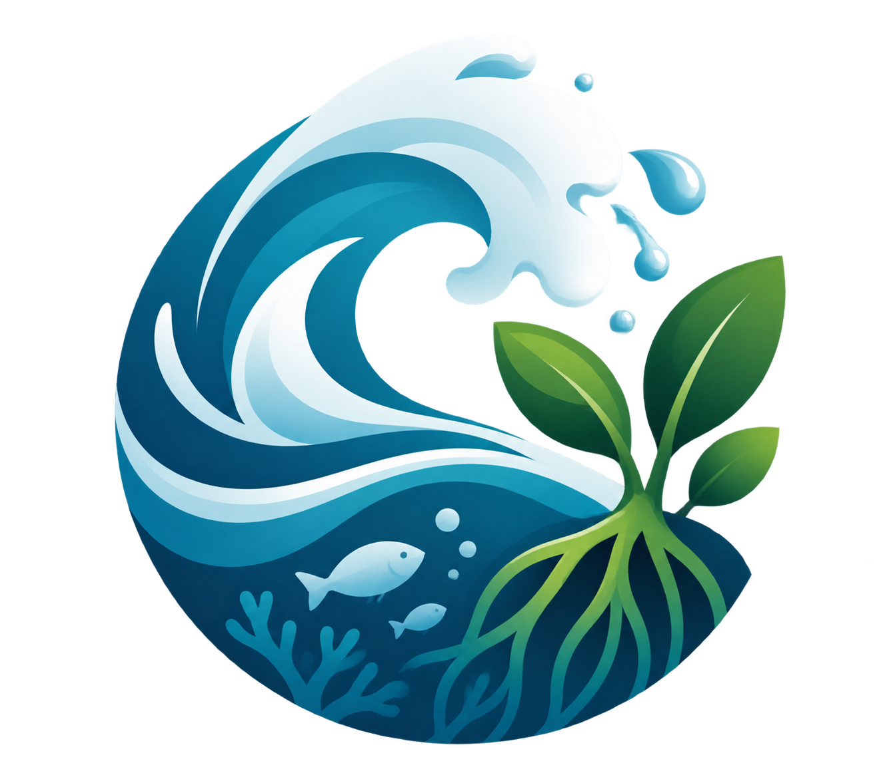
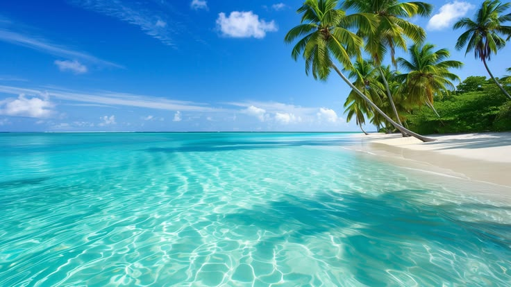

01 / EKOSISTEM
Kehidupan Laut
Kenali terumbu karang, biota laut, dan keanekaragaman hayati yang perlu dilindungi.
Pelajari lebih lanjut →
JagaPesisir
EDUKASI LINGKUNGAN · SDG 13 & 14
Mengenal keindahan laut, memahami ancamannya, dan memulai langkah kecil untuk menjaga pesisir kita.
Mulai Menjelajahi →KENALI PESISIR KITA
Laut dan pantai bukan hanya indah, tetapi juga menjadi rumah bagi banyak makhluk hidup. Yuk, kenali lebih dekat!
01 / EKOSISTEM
Kenali terumbu karang, biota laut, dan keanekaragaman hayati yang perlu dilindungi.
Pelajari lebih lanjut →02 / PERLINDUNGAN
Pahami dampak sampah dan pentingnya menjaga habitat alami di wilayah pesisir.
Baca artikel →
03 / AKSI NYATA
Lakukan kebiasaan sederhana untuk mengurangi sampah dan menjaga lingkungan.
Lihat panduan →TUJUAN PEMBANGUNAN BERKELANJUTAN
JagaPesisir mendukung edukasi tentang perubahan iklim dan perlindungan ekosistem laut.
Meningkatkan kesadaran dan tindakan menghadapi perubahan iklim.
Mendukung perlindungan laut dan sumber daya pesisir.
MENGENAL PESISIR
Wilayah pesisir menghubungkan kehidupan di darat dan laut. Menjaganya berarti ikut menjaga rumah bagi manusia dan berbagai makhluk hidup.
Terumbu karang, padang lamun, dan mangrove menjadi habitat bagi berbagai organisme.
Ekosistem pesisir berperan dalam menjaga keseimbangan lingkungan dan mendukung kehidupan masyarakat sekitar.
Kebiasaan sehari-hari dan kepedulian masyarakat dapat membantu mengurangi tekanan terhadap lingkungan pesisir.
KENALI TANTANGANNYA
Memahami masalah adalah langkah awal untuk ikut menjaga lingkungan. Beberapa ancaman berikut perlu mendapat perhatian bersama.
Pelajari ekosistem laut →Sampah yang tidak dikelola dengan baik dapat terbawa ke sungai, pantai, dan laut.
Aktivitas yang merusak mangrove dan terumbu karang dapat mengganggu habitat berbagai makhluk hidup.
Perubahan kondisi laut dan cuaca dapat memberi tekanan pada ekosistem pesisir.
MULAI DARI KEBIASAAN
Tidak harus menunggu menjadi ahli untuk ikut menjaga pesisir. Mulailah dari hal sederhana yang bisa dilakukan setiap hari.

Bawa pulang sampahmu dan jaga pantai tetap bersih untuk semua.

Kenali peran mangrove dalam menjaga ekosistem wilayah pesisir.

Kurangi plastik sekali pakai dan biasakan memilah sampah.
MULAI DARI DIRI SENDIRI
Temukan aksi sederhana yang bisa kamu lakukan setiap hari.